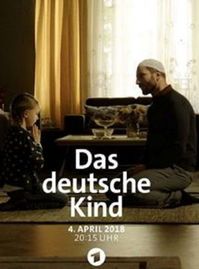

#9020 Das Deutsche Kind
 
 IMDB-Wertung: 6.0 / 10
IMDB-Wertung: 6.0 / 10  Metascore: 0
Metascore: 0 
Cem Balta, ein angehender Imam, lebt gemeinsam mit seiner Frau Sehra und Tochter Hanna in Hannover. Die deutsche Kultur ist für die Familie dabei ebenso selbstverständlich ein Bestandteil ihres Lebens wie die türkische. Davon waren sie bisher jedenfalls überzeugt. Doch als sie nach einer Tragödie Pia das Kind einer Freundin, bei sich aufnehmen, sehen sie sich auf einmal mit alten Vorurteilen konfrontiert. Schon in ihrem nächsten Umfeld sorgt ihre Entscheidung, Pia großzuziehen, für hitzige Diskussionen. Und bald mischen sich auch Pias Großeltern Christine und Theo Unger ein, die ihre Enkeltochter nicht bei Fremden und erst recht nicht bei praktizierenden Muslimen aufwachsen sehen wollen. Es kommt zu einem Sorgerechtsstreit, bei dem es auf einmal um Werte wie Glaube, Familie und Heimat geht...
Jahr: 2017
Dauer: 88 Minuten
FSK:
Land: Deutschland Studio: ARDTonspuren:
Untertitel:
Auflösung: 720p (1280x720) Größe: 1679 MB
Genre: Drama, Familie
Regisseur: Umut Dag
Drehbuch: Paul Salisbury
Soundtrack: Iva Zabkar
Darsteller:
 Katrin Saß als Christine Unger
Katrin Saß als Christine Unger Petra Schmidt-Schaller als Natalie Unger
Petra Schmidt-Schaller als Natalie Unger Sahin Eryilmaz als Furkan Aydin
Sahin Eryilmaz als Furkan Aydin- Derek Meisenburg als Court Room Security (uncredited)
- Funda Rosenland als Dilek Aydin (uncredited)
- Daniela Trittner als Verfahrensbeistand (uncredited)
 Murathan Muslu als Cem Balta
Murathan Muslu als Cem Balta- Neshe Demir als Sehra Balta
- Malina Harbort als Pia Unger
- Sue Mossbauer als Hanna Balta
- Lutz Blochberger als Theodor Unger
- Vedat Erincin als Sinan Aydin
- Nizam Namidar als Tahier Melek
- Sema Poyraz als Fatma Aydin
- Aljoscha Stadelmann als Rolf Jarolin
- Ursula Renneke als Frau Lehmann
- Susanne Bredehöft als Claudia Behrns
- Irene Rindje als
- Peter Sikorski als Polizist #1 (uncredited)
Datei: X:\2017(A-F)\Deutsche Kind, Das (2017, FSK, 1280x720).mkv seit 24.05.2018
Festplatte: HD 2017(A-Z)-2018(A-F)
 Es gibt insgesamt 152 Filme in der Gruppe '2017(A-F)'
Es gibt insgesamt 152 Filme in der Gruppe '2017(A-F)'